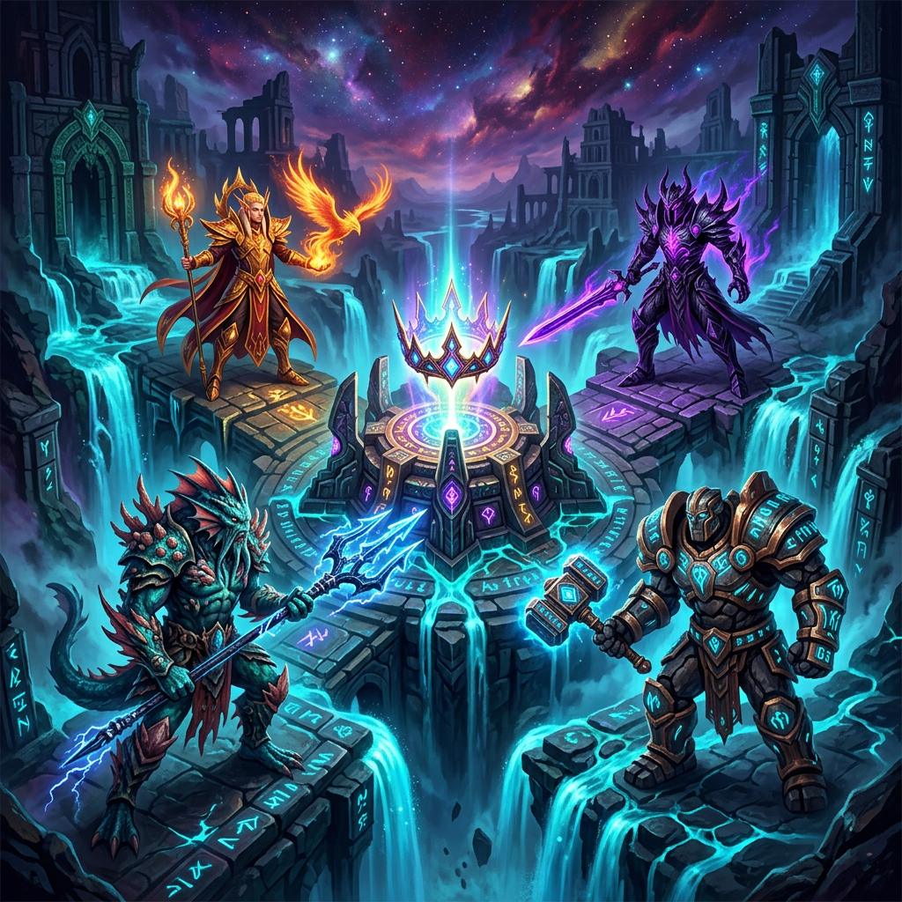

(8)CrownOfWarMahdi.w3xحجم: — مگابایت (— bytes) • ۴ امپراتوری با مدلهای نژادی مناسب، سقف غذا ۶۰۰، ۱۶ قهرمان با پرترهٔ اختصاصی، ۶۴ آیکون مهارت دستساز و ۶۴ جلوهٔ اختصاصی، ۱۲ نشان تالار با پیشرفت Tier، بازگشت Mana Burn و Phoenix و Resurrection، و اصلاح مسیر اجرای melee-AI
(8)CrownOfWarMahdi.w3x را از پیوست همین گفتگو دانلود کنید؛ لینک Preview را بیرون Arena باز نکنید.